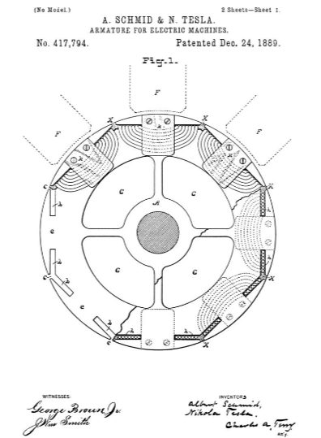
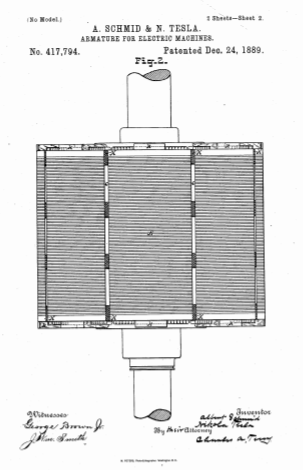

Descarga la patente original en esté enlace



Que se sepa que nosotros, ALBERT SCHMID y NIKOLA TESLA , ciudadanos, respectivamente, de la República de Suiza y Smiljan, Lika, país fronterizo de Austria-Hungría, ahora residiendo en Allegheny y Pittsburgh, ambos en el país de Allegheny. y el estado de Pensilvania, han inventado una cierta Mejora nueva y útil en armaduras para máquinas eléctricas, (caso núm. 310), de la cual la siguiente es una especificación.
La invención se refiere a la construcción de armaduras para generadores y motores eléctricos, y el objeto es proporcionar una armadura eléctricamente eficiente, cuya construcción sea simple y económica, y en la que las bobinas de alambre o cinta conductores aislados se puedan enrollar o enrollar convenientemente. formado en bobinas ubicadas con referencia al cuerpo del inducido para proporcionar los mejores resultados posibles.
Para ciertos propósitos, es deseable construir las armaduras de generadores eléctricos y motores con sus núcleos de material magnetizable que se proyectan a través de las bobinas muy cerca de los polos de campo magnético. Cuando las armaduras se construyen de esta manera, son necesarios algunos medios para mantener las bobinas en posición y evitar que sean expulsadas por la fuerza centrífuga.
Esta invención tiene como objetivo proporcionar tales medios en un inducido que tenga proyecciones polares, y también formar un inducido de tal manera que exponga una gran área de la superficie del núcleo a los polos del campo magnético.
La invención consiste, en términos generales, en la formación de un núcleo-inducido que está preferentemente constituido por láminas de material magnetizable aisladas entre sí, con ranuras o aberturas divergentes para recibir el hilo o cinta del inducido, cuyas ranuras están conectadas con el exterior de la armadura. el inducido por las aberturas a través de las cuales se puede colocar el cable en las ranuras, y al colocar el cable en dichas ranuras de la manera adecuada.
Conocemos las Patentes de los Estados Unidos N° 327,797, otorgada a Immisch, y N° 292,077, otorgada a Wenstrom, y la patente británica de Coerper, N° 9,013 de 1887, y no reivindicamos la construcción que se muestra y describe allí.
La invención se describirá más particularmente en relación con los dibujos adjuntos, en los que:
La figura 1 es una vista desde un extremo, parcialmente en sección, de una armadura que incorpora las características de la invención, y la figura 2 es un plano de la armadura.
Con referencia a las figuras, FF indica polos de imán de campo y A representa el cuerpo o núcleo de una armadura compuesta, en este caso, de láminas de material magnetizable construido de cualquier manera adecuada, estando las láminas preferiblemente separadas por estratos intermedios de aislante. material. Las placas o láminas individuales están construidas con aberturas radiales c, que se extienden a una corta distancia de la superficie, y con ranuras o aberturas b, que se extienden en diferentes direcciones desde las aberturas c. Las ranuras divergen entre sí en ángulos tales como para causar las dos ranuras en los lados opuestos de cada web easí formado para estar en la misma cuerda del círculo de la armadura. Las placas también pueden estamparse o formarse con aberturas G para eliminar el metal innecesario. Una vez formadas las placas, se colocan de la manera adecuada para formar todo el núcleo de la armadura, colocándose las ranuras b una frente a la otra para formar aberturas continuas a lo largo de toda la longitud de la armadura. Estas aberturas pueden estar revestidas por bolsillos h de material aislante, como por ejemplo, fibra vulcanizada, y los alambres se enrollan luego en las ranuras desde las aberturas cy alrededor de las respectivas bandas e. Los clips de enrollamiento k pueden colocarse en los extremos respectivos del inducido frente a cada red e para mantener los cables en las posiciones correctas a medida que se enrollan en las ranuras y hacia abajo sobre los extremos del inducido.
Habiendo enrollado los alambres en sus posiciones adecuadas, se pueden sujetar de forma más segura en su posición por medio de bloques K de material no magnético, colocados a intervalos o extendiéndose por todas las ranuras o aberturas cy sobresaliendo en las ranuras b.
Se encuentra que una armadura construida de la manera descrita es muy eficiente en sus operaciones y al mismo tiempo simple en su construcción.
Las conexiones entre las bobinas del inducido y los conductores o placas colectoras se pueden realizar de cualquier manera habitual bien conocida, de acuerdo con los fines que se desean cumplir.
Afirmamos que nuestra invención es:
24 de Diciembre de 1889. .
Nikola Tesla.